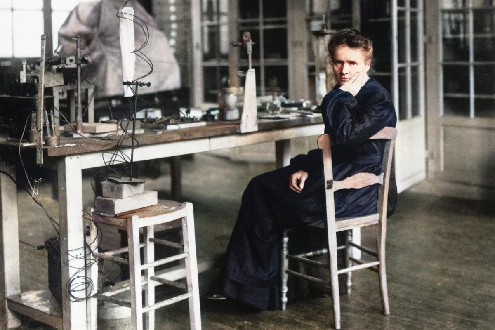

Marie Curie

One of History's Greatest Scientists
Marie Curie was the first woman to win a Nobel Prize, the first person to win two Nobel Prizes, the only woman to win in two fields, and the only person to win in multiple sciences. Awards that she received include:
- Nobel Prize in Physics (1903, with her husband Pierre Curie and Henri Becquerel)
- Davy Medal (1903, with Pierre)
- Matteucci Medal (1904, with Pierre)
- Actonian Prize (1907)
- Cresson Medal (1909)
- Nobel Prize in Chemistry (1911)
- Franklin Medal of the American Philosophical Society (1921)